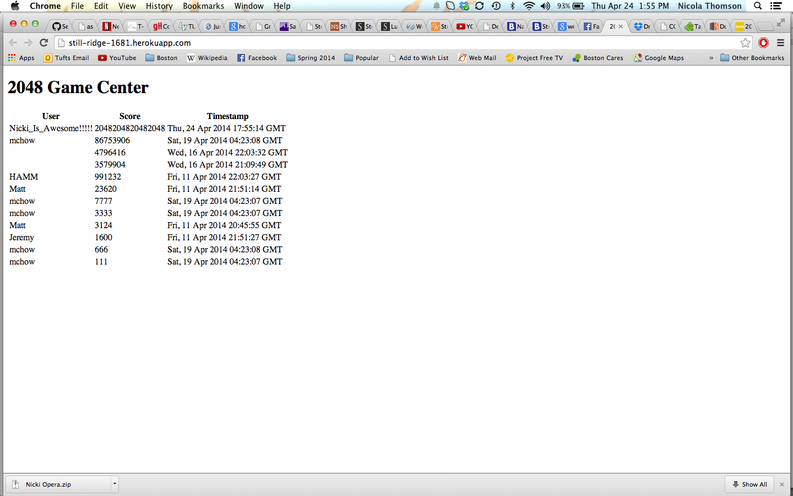
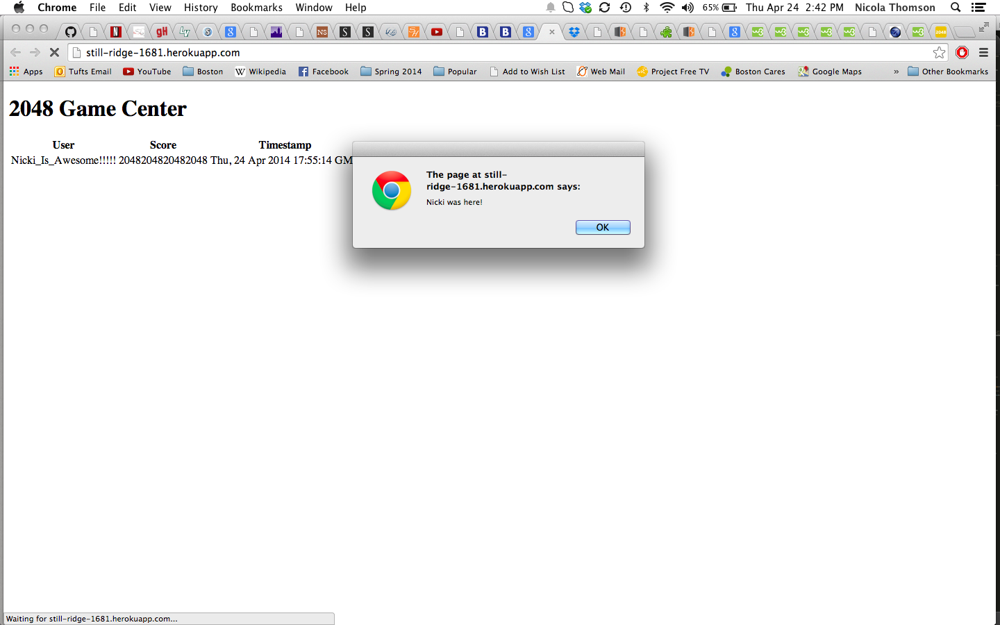
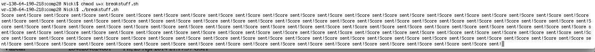
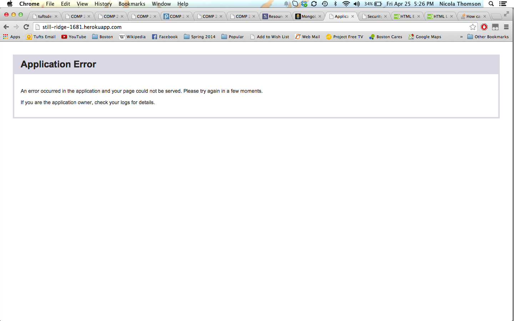

This is a report on the security assement of the 2048 gamecenter at this address. The purpose of the game center is to hold the scores of anyone who plays an altered version of the game 2048. (The game is altered because the scores need to be sent to the game center.) My job was to find security problems in the program and suggest ways these can be fixed.
When approaching this problem I started from weaknesses which could be exploited without any fancy web browser add-ons. The one tool I did use (as running from a webpage would overload and crash) was curl, in order to send responses from my local machine
The the problems found all come from when data is sent to the website. The code of the game center needs to be altered, so that:
Otherwise fake scores and additional code can be added to alter the website.
Location: /submit.json
Severity of issue: medium
Considering the point of this website is to keep track of high scores, it completely defeats the purpose, to have the ability to insert fake highscores, such as my score of 2048204820482048.
Description: Having worked on a similar program myself I started with the assumption that the post and get functions operated the same way. Using this I simply used a post command as follows on an html file I was running from my computer.
$.post("http://still-ridge-1681.herokuapp.com/submit.json", {username: username, score: scores2send, grid: grid2send } );
where username, scores2send, and grid were whatever I wanted them to be.
Proof of vulnerability:
Example of fake score submited

Resolution: Here code needs to be added to verify the source which the game center accepts data from. Most likely the following needs to be changed:
header ('Access-Control-Allow-Origin: *');
This needs to be changed to a proper validation using the withCredintial property on XMLHttpRequest
Location: /submit.json
Severity of issue: high
Here the website can be changed to something completely different, including the addition of malicious code
Description: Again taking advantage of the ability to send anything to this website, JavaScript within an htlm script tag can be sent to the database, and when the website loads, this script will execute. This however would not be resolved by resolving the above issue, as users can still enter a script tag for their username from the altered version of 2048 that is accepted. The code used was as follows:
$.post("http://still-ridge-1681.herokuapp.com/submit.json", {username: "<script> alert('Nicki was here!') </script>" , score: scores2send, grid: grid2send } );
where scores2send, and grid were whatever I wanted them to be and were not really relevant
Proof of vulnerability: 
Resolution: to resolve this, code needs to be added to the post function. Assuming the username has been obtained, the following should be added
if (username.indexOf("<script>") > -1){ username = HACKER_SUCH_SHAME; }
Location: /submit.json
Severity: high
This has brought the entire website down, redering it useless until the database is cleared
Description: Here I took advantage of the limited database space and sent a lot of scores from my local machine as seen below:

This caused the database to fill creating an application error whenever the site is accessed.
Location: /submit.json
Severity of issue: high
Proof of vulnerability: 
Resolution: Here the database needs to be limited so that once it is close to full it deletes old scores, this will prevent the site from crashing
This is only the very beggining of the weaknesses in this website. To further expand I would use browser add-ons to exploit more weaknesses in the game center which may be less obvious.